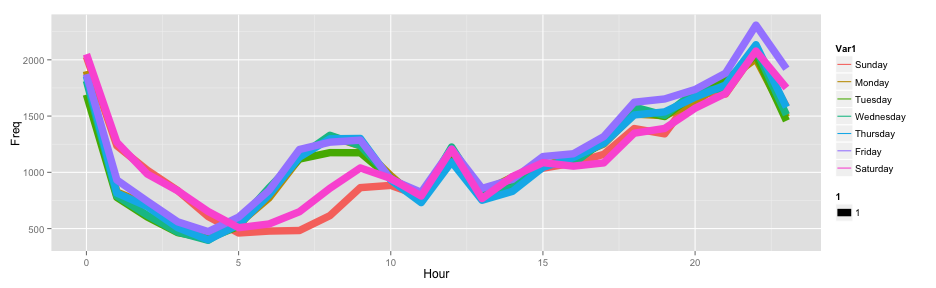

Pellentesque habitant morbi tristique senectus et netus et malesuada fames ac turpis egestas. Vestibulum tortor quam, feugiat vitae, ultricies eget, tempor sit amet, ante. Donec eu libero sit amet quam egestas semper. Aenean ultricies mi vitae est. Mauris placerat eleifend leo. Quisque sit amet est et sapien ullamcorper pharetra. Vestibulum erat wisi, condimentum sed, commodo vitae, ornare sit amet, wisi. Aenean fermentum, elit eget tincidunt condimentum, eros ipsum rutrum orci, sagittis tempus lacus enim ac dui. Donec non enim in turpis pulvinar facilisis. Ut felis. Praesent dapibus, neque id cursus faucibus, tortor neque egestas augue, eu vulputate magna eros eu erat. Aliquam erat volutpat. Nam dui mi, tincidunt quis, accumsan porttitor, facilisis luctus, metus
Slidify Presentation
Developing Data Products
Lee Chun Wai
Coursera Student
Chicago Motor Vehicle Theft Analytic
Chicago Motor Vehicle Theft Analytic
Data Loading and basic pre-processing using different date functions
library(ggplot2)
library(ggmap)
mvt = read.csv("/Users/JoseCLee/Documents/EDX/The Analytic Edge/Week8/mvt.csv",
stringsAsFactors=FALSE)
mvt$Date = strptime(mvt$Date, format ="%m/%d/%y %H:%M")
mvt$Weekday = weekdays(mvt$Date)
mvt$Hour = mvt$Date$hour
Chicago Crime (Weekly)
ggplot(WeekdayCounts, aes (x = Var1, y = Freq)) + geom_line(aes(group=1), alpha=0.3) +
xlab("Days Of the Week ") + ylab("Total Motor Vehicle Thefts")

Chicago Crime Analytic (Hourly)
ggplot(DayHourCounts,aes(x=Hour,y=Freq,color=Var1,size=2)) + geom_line(aes(group=Var1))

Google Map
Create a map of Chicago using Google Map library.
chicago = get_map(location = "chicago", zoom = 11)
- Required Internet Connection
Google Map (Cont.)
ggmap(chicago) + geom_point(data=mvt[1:100,], aes(x=Longitude, y=Latitude))
## Warning: Removed 7 rows containing missing values (geom_point).
 --- .class #id
--- .class #id